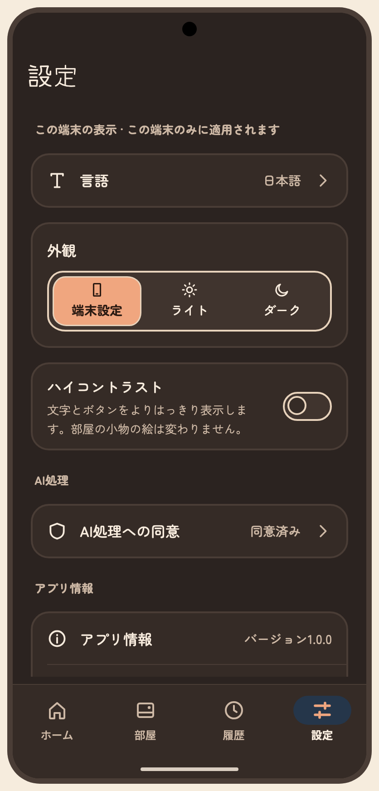

아티팩트 정본의 저장소 미러 · 버전 1794206341-003e · 생성 파일은 수정하지 마세요. 상태 명세와 PNG는 아티팩트에 비해 오래되었을 수 있습니다. 아티팩트

# S26 S26 tab 승인자: 미승인 승인일: 미정 ## 목적, ID, 경로 ID: S26 Route: /(tabs)/settings ## 디자인 원본 - [S26-tab-settings.dc.html](../../../canvas/project/S26-tab-settings.dc.html) ## 이미지 - [S26-normal2__android-night-dark-ja.png](../../../exports/S26-normal2__android-night-dark-ja.png) ## 상태와 상호작용 | 상태 ID | 설명 | 사용하는 키 | |---|---|---| | `S26-first` | 설정 · 첫 실행(AI 동의 전 · 언어는 기기 설정) | `set.title` `set.name.value` `set.login.kakao` `set.together` `set.together.value` `set.cover` `set.cover.on` `set.room.mode` `set.room.mode.auto` `set.room.mode.day` `set.room.mode.night` `set.room.mode.help` `set.room.now` `set.room.tz` `set.room.tz.value` `set.lang` `set.theme` `set.theme.system` `set.theme.light` `set.theme.dark` `set.hc` `set.hc.help` `a11y.off` `a11y.switch` `set.notif` `set.notif.sub.off` `set.notif.help` `set.ai.consent` `consent.status.on` `set.sec.info` `set.about.version` `set.about.licenses` `set.terms` `set.privacy` `set.support` `set.logout` `set.end` `set.end.help` `set.account.delete` `set.account.delete.sub` `set.sec.app` `set.sec.notif` `set.sec.ai` `set.sec.danger` `a11y.tabbar` `tab.home` `a11y.tab` `tab.room` `tab.settings` `a11y.tab.sel` `consent.status.off` | | `S26-normal` | 설정 · 보통(위) | `set.title` `set.name.value` `set.login.kakao` `set.together` `set.together.value` `set.cover` `set.cover.on` `set.room.mode` `set.room.mode.auto` `set.room.mode.day` `set.room.mode.night` `set.room.mode.help` `set.room.now` `set.room.tz` `set.room.tz.value` `set.lang` `set.theme` `set.theme.system` `set.theme.light` `set.theme.dark` `set.hc` `set.hc.help` `a11y.off` `a11y.switch` `set.notif` `set.notif.sub.off` `set.notif.help` `set.ai.consent` `consent.status.on` `set.sec.info` `set.about.version` `set.about.licenses` `set.terms` `set.privacy` `set.support` `set.logout` `set.end` `set.end.help` `set.account.delete` `set.account.delete.sub` `set.sec.couple` `set.sec.room` `a11y.tabbar` `tab.home` `a11y.tab` `tab.room` `tab.settings` `a11y.tab.sel` | | `S26-normal2` | 설정 · 보통(아래) | `set.title` `set.name.value` `set.login.kakao` `set.together` `set.together.value` `set.cover` `set.cover.on` `set.room.mode` `set.room.mode.auto` `set.room.mode.day` `set.room.mode.night` `set.room.mode.help` `set.room.now` `set.room.tz` `set.room.tz.value` `set.lang` `set.theme` `set.theme.system` `set.theme.light` `set.theme.dark` `set.hc` `set.hc.help` `a11y.off` `a11y.switch` `set.notif` `set.notif.sub.off` `set.notif.help` `set.ai.consent` `consent.status.on` `set.sec.info` `set.about.version` `set.about.licenses` `set.terms` `set.privacy` `set.support` `set.logout` `set.end` `set.end.help` `set.account.delete` `set.account.delete.sub` `set.sec.app` `set.sec.notif` `set.sec.ai` `set.sec.danger` `a11y.tabbar` `tab.home` `a11y.tab` `tab.room` `tab.settings` `a11y.tab.sel` | | `S26-loading` | 설정 · 로딩 | `set.title` `set.loading` `a11y.tabbar` `tab.home` `a11y.tab` `tab.room` `tab.settings` `a11y.tab.sel` | | `S26-notif-denied` | 설정 · 마일스톤 알림이 기기에서 꺼져 있음 | `set.title` `set.name.value` `set.login.kakao` `set.together` `set.together.value` `set.cover` `set.cover.on` `set.room.mode` `set.room.mode.auto` `set.room.mode.day` `set.room.mode.night` `set.room.mode.help` `set.room.now` `set.room.tz` `set.room.tz.value` `set.lang` `set.theme` `set.theme.system` `set.theme.light` `set.theme.dark` `set.hc` `set.hc.help` `a11y.off` `a11y.switch` `set.notif` `set.notif.sub.denied` `set.notif.denied.title` `set.notif.denied.body` `set.notif.denied.action` `set.notif.help` `set.ai.consent` `consent.status.on` `set.sec.info` `set.about.version` `set.about.licenses` `set.terms` `set.privacy` `set.support` `set.logout` `set.end` `set.end.help` `set.account.delete` `set.account.delete.sub` `set.sec.app` `set.sec.notif` `set.sec.ai` `set.sec.danger` `a11y.tabbar` `tab.home` `a11y.tab` `tab.room` `tab.settings` `a11y.tab.sel` | | `S26-offline` | 설정 · 오프라인(방 설정은 잠김) | `set.title` `set.offline.title` `set.offline.body` `set.name.value` `set.login.kakao` `set.together` `set.together.value` `set.cover` `set.cover.on` `set.room.mode` `set.room.mode.auto` `set.room.mode.day` `set.room.mode.night` `set.room.mode.help` `set.room.now` `set.room.tz` `set.room.tz.value` `set.lang` `set.theme` `set.theme.system` `set.theme.light` `set.theme.dark` `set.hc` `set.hc.help` `a11y.off` `a11y.switch` `set.notif` `set.notif.sub.off` `set.notif.help` `set.ai.consent` `consent.status.on` `set.sec.info` `set.about.version` `set.about.licenses` `set.terms` `set.privacy` `set.support` `set.logout` `set.end` `set.end.help` `set.account.delete` `set.account.delete.sub` `set.sec.couple` `set.sec.room` `a11y.tabbar` `tab.home` `a11y.tab` `tab.room` `tab.settings` `a11y.tab.sel` | | `S26-error` | 설정 · 불러오기 오류 | `set.title` `set.err.title` `set.err.body` `common.retry` `a11y.tabbar` `tab.home` `a11y.tab` `tab.room` `tab.settings` `a11y.tab.sel` | | `S26-push-consent` | 설정 → AI 처리 동의 관리(푸시) | `set.ai.consent` `consent.status.date` `consent.status.on` `consent.couple.body` `consent.sent.body` `consent.keep.body` `consent.withdraw` | | `S26-push-lic` | 설정 → 글꼴·오픈소스 라이선스(푸시) | `lic.title` `lic.note` `lic.inter` `lic.ofl` `lic.view` `lic.notokr` `lic.notojp` | | `S26-sheet-lang` | 설정 → 언어(시트) | `set.title` `set.name.value` `set.login.kakao` `set.together` `set.together.value` `set.cover` `set.cover.on` `set.room.mode` `set.room.mode.auto` `set.room.mode.day` `set.room.mode.night` `set.room.mode.help` `set.room.now` `set.room.tz` `set.room.tz.value` `set.lang` `set.theme` `set.theme.system` `set.theme.light` `set.theme.dark` `set.hc` `set.hc.help` `a11y.off` `a11y.switch` `set.notif` `set.notif.sub.off` `set.notif.help` `set.ai.consent` `consent.status.on` `set.sec.info` `set.about.version` `set.about.licenses` `set.terms` `set.privacy` `set.support` `set.logout` `set.end` `set.end.help` `set.account.delete` `set.account.delete.sub` `set.sec.app` `set.sec.notif` `set.sec.ai` `set.sec.danger` `a11y.tabbar` `tab.home` `a11y.tab` `tab.room` `tab.settings` `a11y.tab.sel` `set.lang.sheet` `set.lang.system` `set.lang.note` | | `S26-sheet-tz` | 설정 → 시간대(시트) | `set.title` `set.name.value` `set.login.kakao` `set.together` `set.together.value` `set.cover` `set.cover.on` `set.room.mode` `set.room.mode.auto` `set.room.mode.day` `set.room.mode.night` `set.room.mode.help` `set.room.now` `set.room.tz` `set.room.tz.value` `set.lang` `set.theme` `set.theme.system` `set.theme.light` `set.theme.dark` `set.hc` `set.hc.help` `a11y.off` `a11y.switch` `set.notif` `set.notif.sub.off` `set.notif.help` `set.ai.consent` `consent.status.on` `set.sec.info` `set.about.version` `set.about.licenses` `set.terms` `set.privacy` `set.support` `set.logout` `set.end` `set.end.help` `set.account.delete` `set.account.delete.sub` `set.sec.couple` `set.sec.room` `a11y.tabbar` `tab.home` `a11y.tab` `tab.room` `tab.settings` `a11y.tab.sel` `set.room.tz.pick` `set.room.tz.search` `set.room.tz.tokyo` `set.room.tz.la` `set.room.tz.ny` `set.room.tz.london` | | `S26-push-end` | 설정 → 공간 종료 확인(푸시 · 탭 바 숨김) | `end.title` `end.body` `end.b1` `end.b2` `end.b3` `end.check` `end.confirm` `end.cancel` | ## 이동 및 뒤로 F04: S13 → S14 종료 또는 S15 신고; 동의 관리 → S12. 뒤로: 상세에서 설정으로; 종료 완료 후 S14 종료 안내. S27은 세 탭의 전역 내비게이션 참조. ## 접근성 상태 표에 나열된 `a11y.*` 키를 스크린 리더 이름으로 사용합니다. 공통 접근성 및 200% 글자 규칙은 [interaction notes](../../../interaction-notes.md#10-접근성-상호작용)를 참조하세요. TODO: 해당 상태에 명시되지 않은 역할과 이름을 확인하세요. ## 수락 시나리오 - [ ] S26-AC-01: 설정 탭을 선택하면 설정 루트를 표시한다. ## 열린 질문 / 추적 TODO: 명세에 없는 disabled/offline 상태의 적용 여부와 정확한 뒤로 대상을 확인하세요. 시나리오와 요구사항·테스트·실행 결과는 [추적표](../../traceability.md)에 연결하세요.
| Key | 한국어 | English · draft G4 | 日本語 · draft G4 |
|---|---|---|---|
| a11y.off | 꺼짐 | off | オフ |
| a11y.switch | {name}, {state} | {name}, {state} | {name}、{state} |
| a11y.tab | {name} 탭, {total}개 중 {n}번째{sel} | {name} tab, {n} of {total}{sel} | {name}タブ、{total}件中{n}件目{sel} |
| a11y.tab.sel | , 선택됨 | , selected | 、選択中 |
| a11y.tabbar | 탭 막대 | Tab bar | タブバー |
| common.retry | 다시 시도 | Try again | もう一度試す |
| consent.couple.body | 동의는 사람마다 따로 해요. 내 동의는 내가 보내는 요청에만 적용돼요. 요청에는 두 사람이 함께 꾸민 방 배치가 들어가요. | Consent is given per person. Yours applies only to requests you send. Requests include the room layout you two decorated together. | 同意は一人ひとり別々です。あなたの同意は、あなたが送るリクエストにのみ適用されます。リクエストには、ふたりで飾った部屋の配置が含まれます。 |
| consent.keep.body | 적용한 요청 글은 30일, 적용하지 않은 미리 보기는 24시간 뒤 아룸 서버에서 삭제돼요. 설정의 'AI 처리 동의'에서 언제든 철회할 수 있어요. | Applied requests are deleted from Aroom's servers after 30 days, and unapplied previews after 24 hours. You can withdraw any time in Settings under "AI processing consent". | 反映したリクエスト文は30日後、反映しなかったプレビューは24時間後に、アルームのサーバーから削除されます。設定の「AI処理への同意」からいつでも撤回できます。 |
| consent.sent.body | 내가 쓴 요청 글과, 요청을 만드는 데 필요한 방 배치(소품 종류·위치·문구). 함께한 날짜, 이름, 이메일은 보내지 않아요. | The request you typed, and the room layout needed to build it (item types, positions, text). Your together-date, names and email are not sent. | 入力したリクエスト文と、作成に必要な部屋の配置（小物の種類・位置・文言）。一緒になった日、名前、メールアドレスは送信しません。 |
| consent.status.date | 2026년 10월 24일 | Oct 24, 2026 | 2026年10月24日 |
| consent.status.off | 동의하지 않음 | Not agreed | 未同意 |
| consent.status.on | 동의함 · {date} | Agreed · {date} | 同意済み · {date} |
| consent.withdraw | 동의 철회 | Withdraw consent | 同意を撤回 |
| end.b1 | 두 사람 모두 접근이 중단돼요 | Both of you lose access | ふたりともアクセスできなくなります |
| end.b2 | 방·사진·장식이 삭제돼요 | The room, photos and decorations are deleted | 部屋・写真・飾りが削除されます |
| end.b3 | 삭제된 내용은 되돌릴 수 없어요 | Deleted content can't be brought back | 削除された内容は元に戻せません |
| end.body | 종료하면 두 사람 모두 D-day와 방에 들어갈 수 없어요. 함께 쓰던 방·사진·장식은 삭제되고 되돌릴 수 없어요. | Once ended, neither of you can open the day count or the room. The room, photos and decorations you shared will be deleted and can't be brought back. | 終了すると、ふたりとも日数表示と部屋に入れなくなります。いっしょに使っていた部屋・写真・飾りは削除され、元に戻せません。 |
| end.cancel | 취소 | Cancel | キャンセル |
| end.check | 내용을 확인했어요 | I understand | 内容を確認しました |
| end.confirm | 공간 종료하기 | End space | スペースを終了する |
| end.title | 공간을 종료할까요? | End this space? | スペースを終了しますか？ |
| lic.inter | Inter · © 2020 The Inter Project Authors | Inter · © 2020 The Inter Project Authors | Inter · © 2020 The Inter Project Authors |
| lic.note | 아룸의 글꼴은 위 라이선스에 따라 앱에 포함되어 있어요. | The fonts in Aroom are bundled under the licenses above. | アルームのフォントは、上記のライセンスに基づいてアプリに同梱されています。 |
| lic.notojp | Noto Sans JP · Noto 프로젝트 | Noto Sans JP · The Noto Project | Noto Sans JP · Noto プロジェクト |
| lic.notokr | Noto Sans KR · Noto 프로젝트 | Noto Sans KR · The Noto Project | Noto Sans KR · Noto プロジェクト |
| lic.ofl | SIL 오픈 폰트 라이선스 1.1 | SIL Open Font License 1.1 | SIL Open Font License 1.1 |
| lic.title | 글꼴·오픈소스 라이선스 | Font and open-source licenses | フォント・オープンソースのライセンス |
| lic.view | 전문 보기 | View full text | 全文を見る |
| set.about.licenses | 글꼴·오픈소스 라이선스 | Font and open-source licenses | フォント・オープンソースのライセンス |
| set.about.version | 버전 {v} | Version {v} | バージョン{v} |
| set.account.delete | 계정 삭제 | Delete account | アカウントを削除 |
| set.account.delete.sub | 되돌릴 수 없어요 | This can't be undone | 元に戻せません |
| set.ai.consent | AI 처리 동의 | AI processing consent | AI処理への同意 |
| set.cover | 홈 배경 사진 | Home background photo | ホームの背景写真 |
| set.cover.on | 설정됨 | Set | 設定済み |
| set.end | 공간 종료 | End space | スペースを終了 |
| set.end.help | 종료하면 함께 쓰던 데이터가 삭제돼요. 되돌릴 수 없어요. | Ending deletes the data you shared. This can't be undone. | 終了すると、いっしょに使っていたデータが削除されます。元に戻せません。 |
| set.err.body | 인터넷 연결을 확인하고 다시 시도해 주세요. | Check your internet connection and try again. | インターネット接続を確認して、もう一度お試しください。 |
| set.err.title | 설정을 불러오지 못했어요 | Couldn't load settings | 設定を読み込めませんでした |
| set.hc | 고대비 | High contrast | ハイコントラスト |
| set.hc.help | 글자와 버튼을 더 또렷하게 보여 줘요. 방 소품 그림은 그대로예요. | Makes text and controls stronger. Room item artwork stays the same. | 文字とボタンをよりはっきり表示します。部屋の小物の絵は変わりません。 |
| set.lang | 언어 | Language | 言語 |
| set.lang.note | 방에 쓴 문구와 프롬프트는 번역되지 않고 쓴 그대로 보여요. | Text you write in the room and prompts are not translated; they appear as written. | 部屋に書いた文言とプロンプトは翻訳されず、書いたとおりに表示されます。 |
| set.lang.sheet | 앱 언어 | App language | アプリの言語 |
| set.lang.system | 기기 설정 따르기 | Follow device | 端末の設定に従う |
| set.loading | 설정을 불러오는 중이에요 | Loading settings | 設定を読み込んでいます |
| set.login.kakao | 카카오 로그인 | Signed in with Kakao | Kakaoでログイン中 |
| set.logout | 로그아웃 | Sign out | ログアウト |
| set.name.value | 지우 | Jiu | ジウ |
| set.notif | 마일스톤 알림 | Milestone notifications | 記念日の通知 |
| set.notif.denied.action | 기기 설정 열기 | Open device settings | 端末の設定を開く |
| set.notif.denied.body | 기기 설정에서 아룸 알림을 켜면 기념일에 받을 수 있어요. | Turn on Aroom notifications in your device settings to receive them on milestone days. | 端末の設定でアルームの通知をオンにすると、記念日に受け取れます。 |
| set.notif.denied.title | 알림이 꺼져 있어요 | Notifications are turned off | 通知がオフです |
| set.notif.help | 다가오는 기념일을 이 기기에 예약해 두고 오전 9시에 알려 줘요. 상대 기기는 따로 정해요. | Upcoming milestones are scheduled on this device and delivered at 9:00 am. Your partner's device is set separately. | 近づく記念日をこの端末に予約し、午前9時にお知らせします。パートナーの端末は別に設定します。 |
| set.notif.sub.denied | 기기에서 알림이 꺼져 있어요 | Notifications are off on this device | 端末で通知がオフです |
| set.notif.sub.off | 꺼짐 · 이 기기에만 적용돼요 | Off · applies to this device only | オフ · この端末のみ |
| set.offline.body | 방 낮·밤과 시간대는 연결된 뒤에 바꿀 수 있어요. 이 기기의 화면 설정은 지금도 바꿀 수 있어요. | Room day/night and time zone can be changed once you're back online. This device's display settings still work. | 部屋の昼夜とタイムゾーンは、接続が戻ってから変更できます。この端末の表示設定は今でも変更できます。 |
| set.offline.title | 오프라인이에요 | You're offline | オフラインです |
| set.privacy | 개인정보 처리방침 | Privacy Policy | プライバシーポリシー |
| set.room.mode | 방의 낮·밤 | Room day / night | 部屋の昼と夜 |
| set.room.mode.auto | 시간대 따라 | By time zone | 時間帯に合わせる |
| set.room.mode.day | 낮 | Day | 昼 |
| set.room.mode.help | '시간대 따라'는 두 사람의 공간 시간대에 맞춰 오전 6시부터 오후 6시까지 낮으로 보여 줘요. | "By time zone" follows your shared space time zone. Day runs from 6 AM to 6 PM. | 「時間帯に合わせる」は、二人のスペースのタイムゾーンに従います。午前6時から午後6時までは昼として表示します。 |
| set.room.mode.night | 밤 | Night | 夜 |
| set.room.now | 지금 방은 {mode}이에요 | The room is showing {mode} now | 今、部屋は{mode}です |
| set.room.tz | 시간대 | Time zone | タイムゾーン |
| set.room.tz.la | 로스앤젤레스 (UTC-8) | Los Angeles (UTC-8) | ロサンゼルス（UTC-8） |
| set.room.tz.london | 런던 (UTC+0) | London (UTC+0) | ロンドン（UTC+0） |
| set.room.tz.ny | 뉴욕 (UTC-5) | New York (UTC-5) | ニューヨーク（UTC-5） |
| set.room.tz.pick | 시간대 고르기 | Choose a time zone | タイムゾーンを選ぶ |
| set.room.tz.search | 도시 검색 | Search cities | 都市を検索 |
| set.room.tz.tokyo | 도쿄 (UTC+9) | Tokyo (UTC+9) | 東京（UTC+9） |
| set.room.tz.value | 서울 (UTC+9) | Seoul (UTC+9) | ソウル（UTC+9） |
| set.sec.ai | AI 처리 | AI processing | AI処理 |
| set.sec.app | 이 기기의 화면 · 이 기기에만 적용돼요 | This device's display · applies to this device only | この端末の表示 · この端末のみに適用されます |
| set.sec.couple | 우리 공간 | Our space | ふたりのスペース |
| set.sec.danger | 공간 | Space | スペース |
| set.sec.info | 앱 정보 | About | アプリ情報 |
| set.sec.notif | 알림 | Notifications | 通知 |
| set.sec.room | 방 · 두 사람에게 적용돼요 | Room · applies to both of you | 部屋 · ふたりに適用されます |
| set.support | 문의 · 신고 | Contact and reports | お問い合わせ・通報 |
| set.terms | 이용약관 | Terms of Use | 利用規約 |
| set.theme | 화면 모드 | Appearance | 外観 |
| set.theme.dark | 어둡게 | Dark | ダーク |
| set.theme.light | 밝게 | Light | ライト |
| set.theme.system | 기기 설정 | Device | 端末設定 |
| set.title | 설정 | Settings | 設定 |
| set.together | 함께한 날짜 | Together since | 一緒になった日 |
| set.together.value | 2025년 6월 29일 | June 29, 2025 | 2025年6月29日 |
| tab.home | 홈 | Home | ホーム |
| tab.room | 방 | Room | 部屋 |
| tab.settings | 설정 | Settings | 設定 |